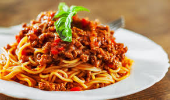

Pasta a la Boloñesa

Ingredientes
- 200g de pasta (espaguetis o tu favorita)
- 250g de carne molida
- 1 cebolla picada
- 2 dientes de ajo picados
- 400g de tomate triturado
- Sal y pimienta al gusto
- Hierbas italianas (orégano, albahaca)
- Queso parmesano rallado (opcional)
Pasos a Seguir
- Cocina la pasta según las instrucciones del paquete. Escúrrela y reserva.
- En una sartén grande, sofríe la cebolla y el ajo hasta que estén dorados.
- Agrega la carne molida y cocina hasta que esté completamente dorada.
- Incorpora el tomate triturado y las especias. Cocina a fuego lento por 15-20 minutos.
- Mezcla la salsa con la pasta cocida.
- Sirve caliente y espolvorea con queso parmesano si lo deseas.